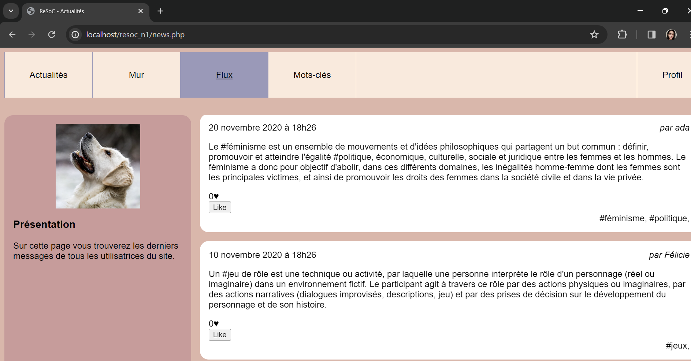
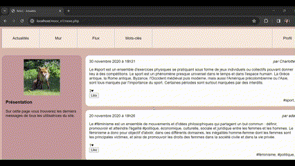
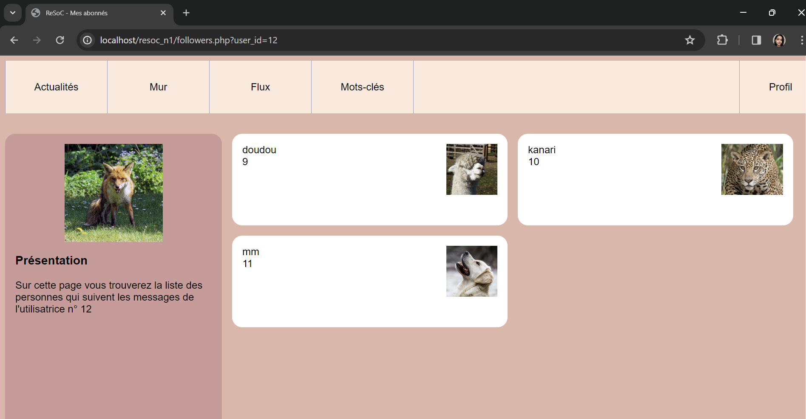

À propos
Les utilisateurs peuvent créer un compte, publier des contenus, aimer les publications et s’abonner à d’autres utilisateurs.
Projet collectif · Réseau social
Un réseau social où les utilisateurs peuvent publier, aimer des contenus et suivre d’autres profils.
En images




Les utilisateurs peuvent créer un compte, publier des contenus, aimer les publications et s’abonner à d’autres utilisateurs.